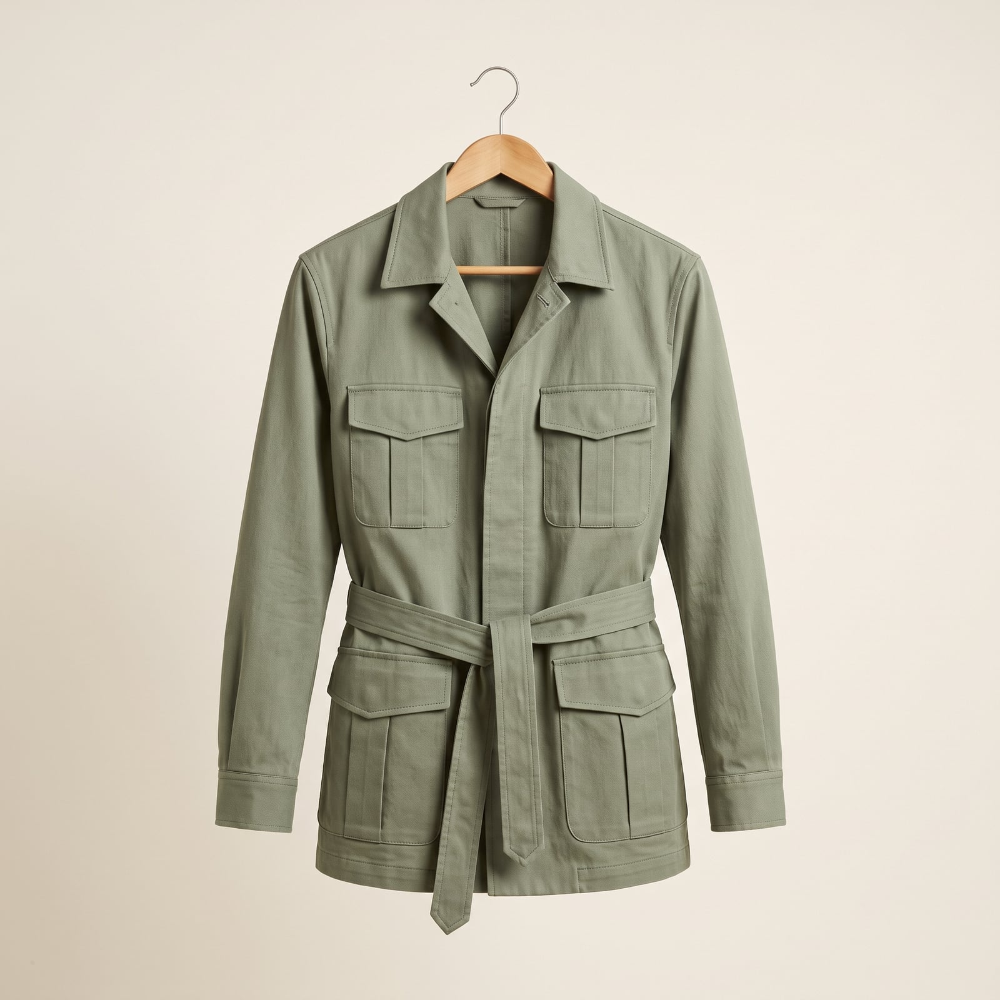
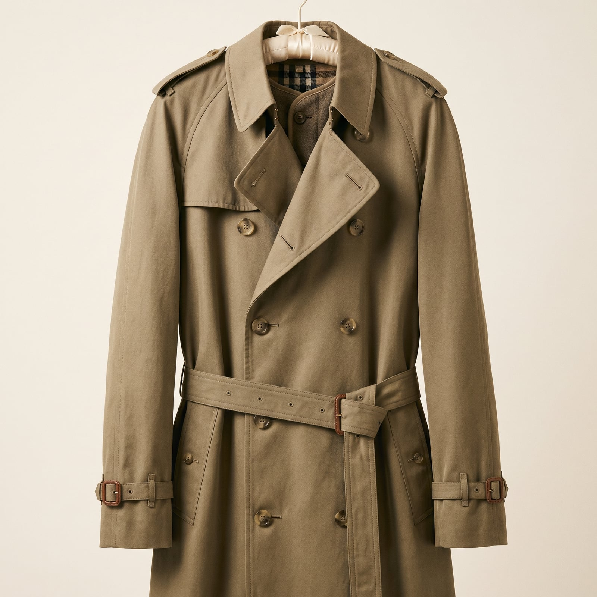
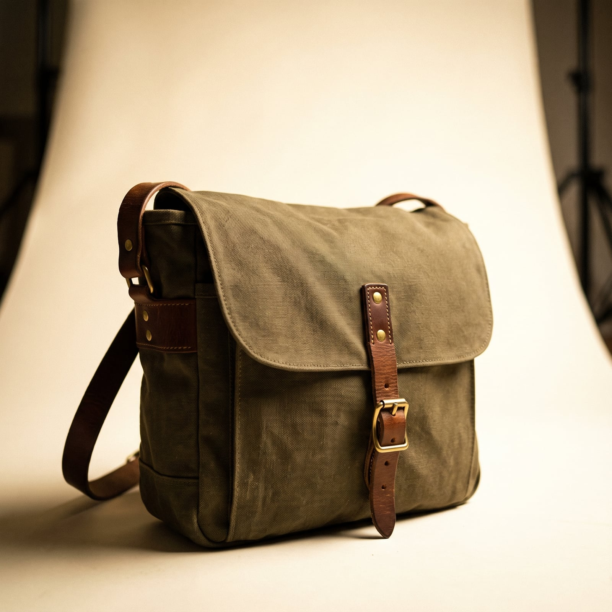
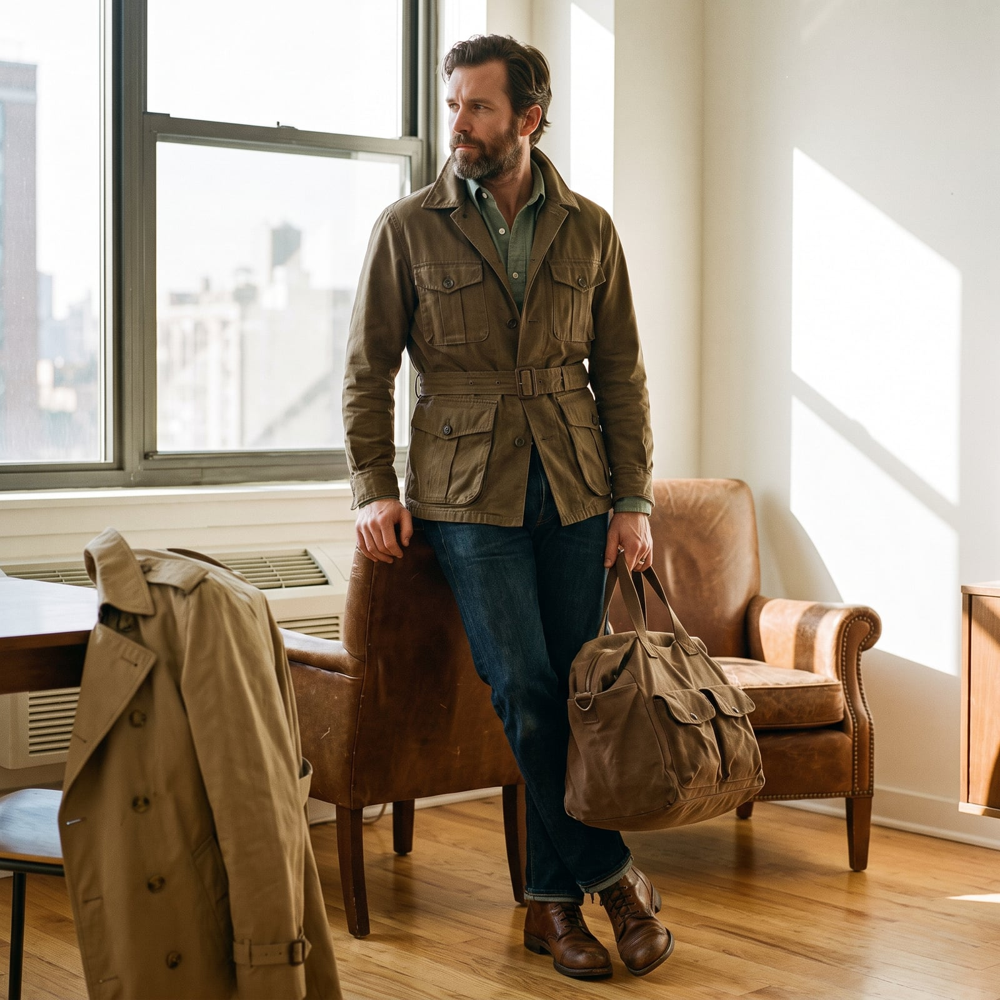
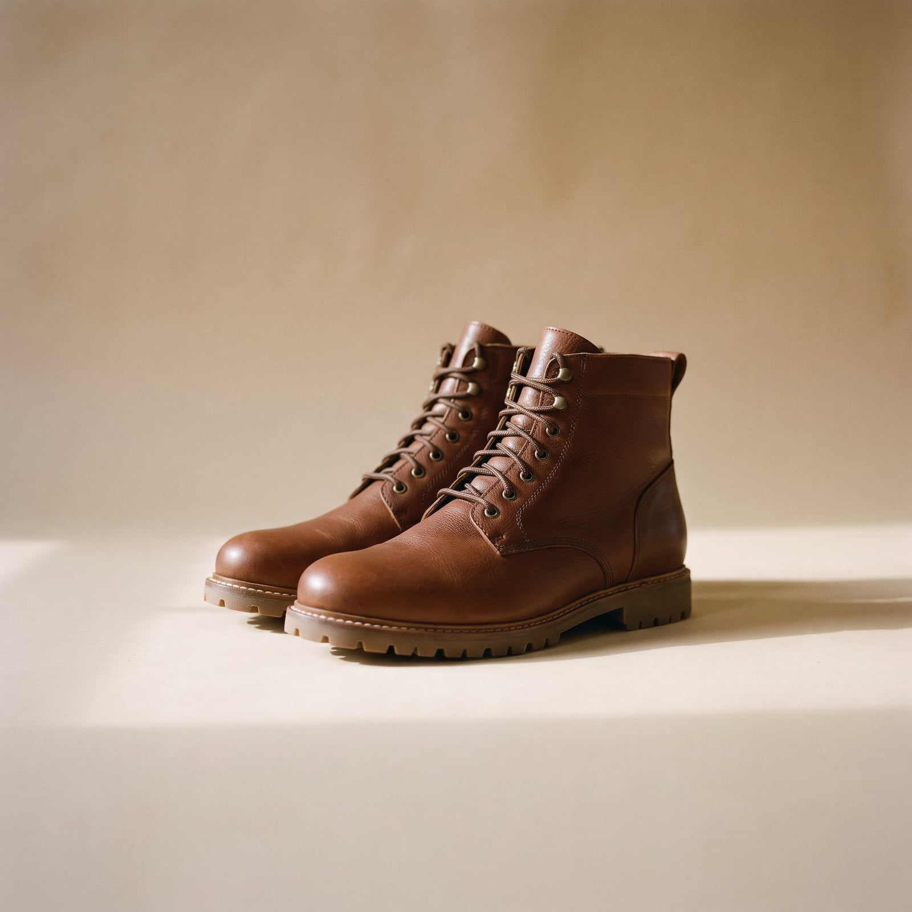

The Correspondent
The safari jacket's practical ancestor was British and French colonial field dress — belted, multi-pocketed cotton twill built for a climate and a job that had no patience for anything else — but its romantic reputation was built by the writers and photographers who wore it doing something else entirely: Hemingway on assignment, generations of war correspondents filing dispatches in the same four rumpled pockets, a whole mid-century idea of the journalist as someone permanently between airports. The style is inseparable from the idea of a life spent leaving.
The trademark features are all field-tested: a belted cotton or linen jacket with four bellows pockets built to hold notebooks and film, epaulettes originally meant to keep a bag strap from sliding, a palette of khaki and olive chosen to hide dust rather than impress anyone. A trench coat serves the same function in wetter climates and carries the same worldly cast.
It suits people who think of themselves as passing through rather than settling in — who want their clothes to look like they've already been somewhere interesting and are willing to go somewhere less comfortable next. There's a literary romance to it that the style has never quite shaken, and doesn't particularly want to.
- A belted safari jacket with four bellows pockets
- Epaulettes, originally functional, now mostly a signature
- A khaki-and-olive palette chosen to hide dust and travel
- The trench coat as a wet-climate equivalent, just as worldly
- Canvas field bags and boots built to be checked as luggage


The Belted Safari Jacket
British and French colonial field officers needed a jacket with enough pockets to carry maps, ammunition, and paperwork without a bag — the belted safari jacket's four bellows pockets and epaulettes all trace back to that original, entirely practical brief.
The silhouette at an accessible price, lighter cotton.
Shop this →Heavier cotton twill and a more considered, field-tested cut.
Shop this →Premium cloth built for actual travel and repeated wear.
Shop this →
The Trench Coat
Standard-issue officer's coat in the First World War trenches it's named for, the trench found its literary afterlife on the shoulders of correspondents and film noir detectives who needed a coat that looked as good filing a story in the rain as it did in a newsroom.
Genuine gabardine construction at an accessible price.
Shop this →The two houses most associated with the original military-derived construction.
Shop this →
The Canvas Field Bag
War correspondents and field journalists needed a bag that could carry a notebook, film, and a portable typewriter through weather that ruined lesser luggage — heavy waxed or unwaxed canvas with reinforced straps became the standard answer.
Genuine canvas construction at an accessible price.
Shop this →Hand-cut in small runs, often repairable indefinitely.
Shop this →
The Khaki Trouser
Khaki twill entered Western wardrobes through British colonial uniforms in India (the word itself is Urdu/Persian for 'dust-colored'), chosen specifically because it hid dirt and blended into a dry landscape.
Fine cotton twill cut with genuine tailoring attention.
Shop this →
The Field Boot
A sturdy leather boot built for uneven, unpredictable terrain — not the parade-ground polish of a military dress boot, but the working boot correspondents actually wore chasing a story across unfamiliar ground.
Genuine leather and welt construction at an accessible price.
Shop this →The reference field boot for this exact wardrobe.
Shop this →Built to order on a last suited to the individual foot.
Shop this →Buy the safari jacket for the pockets first — four working bellows pockets are meant to actually hold notebooks, film, or a passport, and a decorative version with sewn-shut flaps misses the entire point of the garment. Let the khaki-and-olive palette actually show dust and travel wear; a spotless version reads as a costume bought for a trip rather than gear that's survived several.
Choose boots and a field bag genuinely built to be checked as luggage and to take real abuse — scuffs and a broken-in strap are the actual credentials here, not a flaw to hide.
Don't buy this wardrobe pressed and matching from a single collection — the look is assembled from gear that's actually been used across different trips, and a too-coordinated version reads as a costume department's idea of a foreign correspondent rather than the real thing.
This is a wardrobe built for movement and uncertainty, and it reads oddly in a stable, formal context — a belted safari jacket at a black-tie dinner or a conventional office says 'costume,' not 'well-traveled.' Save it for settings where the practicality actually makes sense.
Linen instead of cotton twill for the safari jacket, sleeves rolled permanently, and a lighter canvas bag -- everything gets one layer thinner for the climate, not the occasion.
The trench replaces the safari jacket as the outer layer, a wool sweater underneath, and a scarf that's been through more borders than most passports.
The trench again, doing exactly the job it was built for a century ago -- this wardrobe was basically designed around this weather condition.
A heavier field coat, boots rated for actual cold rather than just style, and gloves that still allow typing.
For a rare embassy dinner: the one good jacket kept folded at the bottom of the bag specifically for this, worn with the same well-traveled boots because there was no room for dress shoes.

Wherever the story is — historically a warzone or a revolution, currently anywhere with a good airport and an uncertain outcome. The destination is chosen by circumstance more than preference.
A go-bag stays packed at all times, not as an affectation but out of genuine necessity; the gap between deciding to leave and actually leaving is measured in minutes, not days.
Hemingway's dispatches and Ryszard Kapuscinski, read as much for craft as content — the discipline of saying a great deal in very little space.
Whatever local paper he can get his hands on, in whatever language, worked through slowly with a dictionary when necessary, on the theory that the real story is rarely in the English-language press.
Find it on Amazon →Whatever's playing in the hotel bar in whatever city he's currently filing from — genuinely no strong preference, by design; too much attachment to a specific sound doesn't travel well.
A handful of songs become permanently associated with specific assignments, replayed years later and immediately transporting.
Listen on YouTube →A home base that's more storage unit than showcase, visited between assignments rather than lived in continuously.
A wall map with pins in it tracking everywhere he's actually been, and a go-bag that's always, genuinely, packed by the door.
See more on Pinterest →Learning just enough of a language to order a drink and ask one real question — fluency was never really the goal, connection was.
Chess with strangers in whatever square or cafe has a board set up, and a running list of places he'll go back to properly, someday, once there isn't a deadline attached.
Learn more →